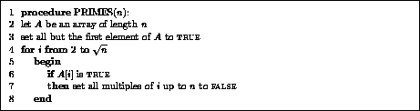
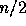
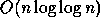
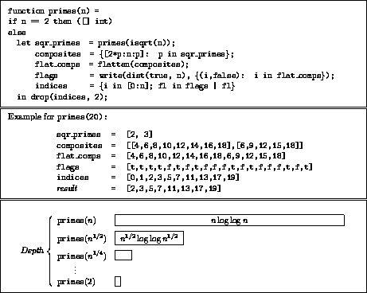
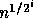
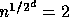
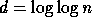
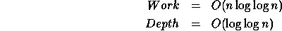

The most common sequential algorithm for finding primes is the sieve of Eratosthenes, which is specified in Figure 8. The algorithm returns an array in which the ith position is set to true if i is a prime and to false otherwise. The algorithm works by initializing the array A to TRUE and then setting to FALSE all multiples of each prime it finds. It starts with the first prime, 2, and works it way up to sqrt(n). The algorithm only needs go up to sqrt(n) since all composite numbers (non-primes) less than n must have a factor less or equal to sqrt(n). If line 7 is implemented by looping over the multiples, then the algorithm can be shown to take O(n log log n) time and the constant is small. The sieve of Eratosthenes is not the theoretically best algorithm for finding primes, but it is close and we would be happy to derive a parallel algorithm that is work-efficient relative to it (i.e. does O(n log log n) work).
It turns out that the algorithm as described has some easy parallelism. In particular, line 7 can be implemented in parallel. In NESL the multiples of a value i can be generated in parallel with the expression
[2*i:n:i]
and can be written into the array A in parallel with the write function. Using the rules for costs (see Figure 6), the depth of these operations is constant and the work is the number of multiples, which is the same as the time of the sequential version. Given the parallel implementation of line 7, the total work of the algorithm is the same as the sequential algorithm since it does the same number of operations, and the depth of the algorithm is O(sqrt(n)) since each iteration of the loop in lines 5-8 has constant depth and the number of iterations is sqrt(n). Note that thinking of the algorithm in terms of work and depth allows a simple analysis (assuming we know the running time of the sequential algorithm) without having to worry about how the parallelism maps onto a machine. In particular, the amount of parallelism varies greatly from the first iteration, in which we have

multiples of 2 to knock out in parallel, to the last iteration where we have only sqrt(n) multiples. This varying parallelism would make it messy to program and analyze on a processor based model.We now consider improving the depth of the algorithm without giving up any work. We note that if we were given all the primes from 2 up to sqrt(n), we could then generate all the multiples of these primes at once. The NESL code for generating all the multiples is
{[2*p:n:p]: p in sqr_primes};
where sqr_primes is a
sequence containing all the primes up to sqrt(n). This computation
has nested parallelism, since there is parallelism across the
sqr_primes (outer parallelism) and also in generating the multiples
of each prime (inner parallelism). The depth of the computation is
constant since each subcall has constant depth, and the work is 
since the total number of multiples when summed across the subcalls is the same as the number of multiples used by the sequential version.

Figure 9: The code for the primes algorithm, an example
of one level of the recursion, and a diagram of the work and depth.
In the code [] int indicates an empty sequence of integers.
The function isqrt takes the square root of an integer.
The function flatten takes a nested sequence and flattens it.
The function dist(a,n) distributes the value a to a sequence
of length n. The expression
{i in [0:n]; fl in flags | fl} can be read
as ``for each i from 0 to n and each fl in flags
return the i if the corresponding fl is true''.
The function drop(a,n) drops the first n
elements of the sequence a.
We have assumed that sqr_primes was given, but to generate these primes we can simply call the algorithm recursively on sqrt(n). Figure 9 shows the full algorithm for finding primes based on this idea. Instead of returning a sequence of flags, the algorithm returns a sequence with the values of the primes. For example primes(10) would return the sequence [2,3,5,7]. The algorithm recursively calls itself on a problem of size sqrt(n) and terminates when a problem of size 2 is reached. The work and depth can be analyzed by looking at the picture at the bottom of Figure 9. Clearly most of the work is done at the top level of recursion, which does O(n log log n) work. The total work is therefore also O(n log log n). Now let's consider the depth. Since each recursion level has constant depth, the total depth is proportional to the number of levels. To calculate this number we note that the size of the problem at level i is

, and that when the size is 2, the algorithm terminates. This gives us the equation
, where d is the depth we seek. Solving for d, this method gives
. The costs are therefore:

This algorithm remains work efficient relative to the sequential sieve of Eratosthenes and greatly improves the depth. It is actually possible to improve the depth to a constant, but we will leave this as an exercise for the reader.